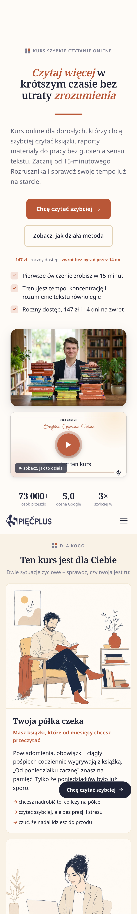

Dawny schemat: granat + pomarańcz #FEAC32
Styl strony bez zmian (żywe 5plus.edu.pl: strona główna i landing Szybkie Czytanie). Zmienia się tylko kolor cegły #B95737. Ilustracje (ruda sofa, czerwone książki) to obrazki i zostają.
Logo
 granat na kremie
granat na kremie pomarańcz na granacie
pomarańcz na granacieDziś (cegła)
Punkt odniesienia.

Wariant 1 · czysty #FEAC32 wszędzie
Dokładnie Twój pomarańcz. Mały tekst w pomarańczu na kremie jest słabo czytelny (kontrast 1,9:1), przyciski mają granatowy napis.Wariant 2 · pomarańcz na wypełnieniach, granat na małym tekście
Przyciski, kropki, strzałki, duże odręczne napisy i numery: pomarańcz. Małe linki i podpisy: granat. Najczytelniejszy.Wariant 3 · pomarańcz na wypełnieniach, ciemny bursztyn na małym tekście
Jak 2, ale małe wyróżnienia w ciemnym bursztynie #9A5800 (kontrast ok. 5:1), więc pomarańcz zostaje „widoczny” w tekście.